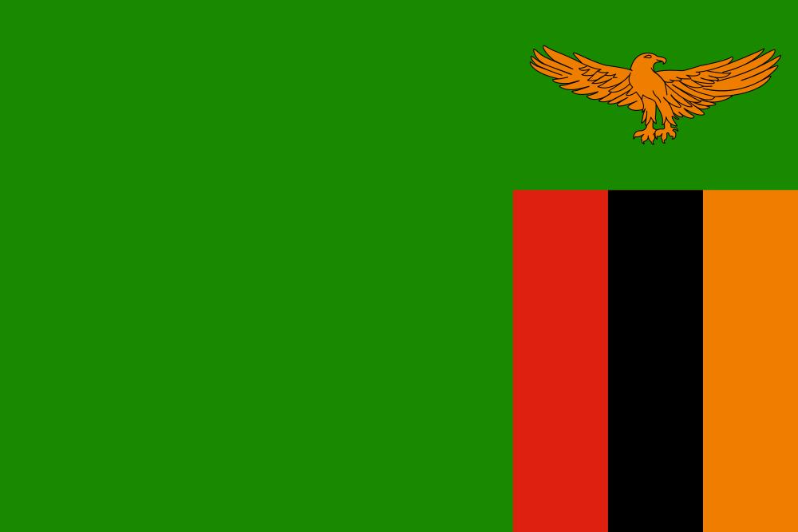

Algerian
Traditional Algerian fashion includes the djellaba and kaftan, often made from fine fabrics like silk, adorned with intricate embroidery.
Show me
Angola
Angolan fashion blends modern trends with traditional outfits like the pano and samba, showcasing vibrant patterns and fabrics.
Show me
Congo (DRC)
The Democratic Republic of Congo is known for the sapeurs, fashion icons who mix dandyism with traditional elements in vibrant suits.
Show me

EGYPT
Egypt's fashion blends ancient influences with modern styles, with galabeya robes and intricately adorned abaya dresses still popular.
Show me
Ethiopia
Ethiopian fashion often features the habesha kemis, a white cotton dress adorned with intricate borders made from shiny threads.
Show me
Libya
Libyan fashion features the farashia for women, a draped garment, often paired with intricate silver jewelry.
Show me
Mali
Malian fashion is known for the boubou and the use of bogolan or mud cloth, often used to create intricate designs.
Show me
Mozambique
Mozambique fashion incorporates capulana, a brightly colored cloth worn in various styles by women.
Show me
Namibia
The Herero women in Namibia are known for their Victorian-inspired dresses, while the Himba people wear traditional leather skirts and adorn themselves with ochre and jewelry.
Show me
Niger
In Niger, traditional fashion includes the boubou for men and women, often in bright colors with detailed embroidery.
Show me
Nigeria
Nigeria is famed for its colorful aso ebi fabrics, gele headwraps, and the agbada, a flowing robe worn by men.
Show me
Somalia
Somalia fashion features the guntiino for women, a long wrap dress, and the ma'awiis, a sarong worn by men.
Show me
South Africa
South African fashion is diverse, with traditional Zulu beadwork, Xhosa attire, and modern urban street styles influencing trends.
Show meSudan
In Sudan, traditional attire includes the thobe for women, a long, flowing wrap, and jalabiya for men.
Show me
Tanzania
Tanzanian fashion features kanga fabric, a colorful cotton cloth worn in various styles, often with proverbs printed on it.
Show me

Zambia
Zambian women traditionally wear chitenge fabric, which is wrapped into skirts or dresses and often adorned with cultural motifs.
Show me